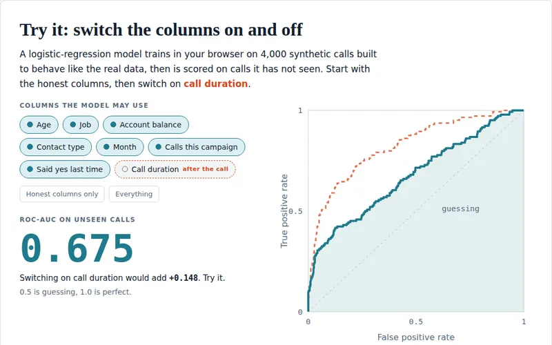

Bank Marketing: the column that fooled every model
Predicting which bank customers subscribe to a term deposit (UCI Bank Marketing) with four families of models: classical ML, tabular foundation models (iLTM, TabPFN v2), fine-tuned transformers (DistilBERT, RoBERTa) and LLM prompting (Phi-3-mini). Written up as an IEEE-format paper.
- Keeping the call-duration column raised ROC-AUC by about 0.14 in every pipeline — more than any difference between the models.
- On a time-based split (train 2008–09, test 2010), ROC-AUC fell to 0.65.
- TabPFN v2 reached almost the same F1 as iLTM (0.520 vs 0.527) with about 1/125 of the compute.
My role: one of the two main contributors. I built the classical ML baselines, fine-tuned DistilBERT and RoBERTa, ran the iLTM, TabPFN v2 and Phi-3-mini experiments, and wrote the paper.
Built with scikit-learn, Hugging Face Transformers, TabPFN v2, iLTM, Phi-3-mini and LaTeX.
